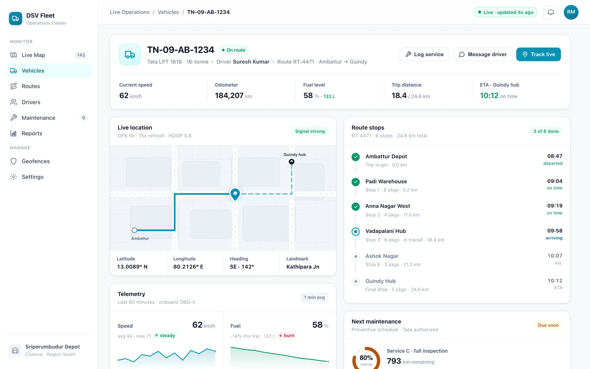

Web dashboard
A live map with custom vehicle markers, fleet performance dashboards and geofence event feeds — the control room for dispatch.
Real-time fleet tracking and dispatching — every vehicle, driver and route on one screen. Track live, route around traffic, and optimize for capacity and time windows.
GPS position pushed from the driver app on Firebase Realtime Database.
Drop in “where's my driver?” support tickets after go-live.
Every vehicle, driver and route on a single live operations view.
The platform
Field, planning and control run on the same real-time data. What a driver taps in the cab, dispatch sees on the map — and the routing engine plans against it.
A live map with custom vehicle markers, fleet performance dashboards and geofence event feeds — the control room for dispatch.
Traffic-aware route planning that respects vehicle capacity and delivery time windows, then sequences stops for the shortest viable run.
A Flutter app in the cab that streams GPS every 15 seconds, carries the day's stops, and keeps the field and dispatch on the same page.
How dispatch works
The same loop runs all day. Positions come in, plans go out, and every run gets tighter than the last.
The driver app streams GPS every 15 seconds to Firebase. Dispatch watches the whole fleet move on one live map, with geofence entry and exit events firing in real time.
Plan runs against live traffic on Google Maps, honoring each vehicle's capacity and every stop's delivery time window — no route that can't actually be driven.
Fuel monitoring and driver-behavior scoring feed back into planning, while maintenance is scheduled by mileage and engine-hours so vehicles stay on the road.
Product tour
Two views, one source of truth. The map for the whole fleet, the detail panel for a single vehicle.
Every vehicle, driver and route on one screen. Custom markers move with each 15-second update, geofences light up on entry and exit, and dispatch never has to ask where a driver is.

Live operations — every vehicle, driver and route on one map.
Drill into a single vehicle for live location and telemetry, its route and stops, and the geofence events it has crossed — everything dispatch needs to answer a question without a phone call.

Vehicle detail — live location, telemetry, route stops and geofence events.
Capabilities
The operational detail that keeps a fleet moving — tracking, routing, scoring and upkeep, in one system.
Draw geofence polygons on Google Maps and fire entry and exit events the moment a vehicle crosses — arrivals, departures and dwell, tracked automatically.
Plans route around live traffic while respecting vehicle capacity and delivery time windows, so the sequence you dispatch is one a driver can actually run.
Fleet performance dashboards with fuel monitoring and driver-behavior scoring — spot heavy consumption and harsh driving before they cost you.
Schedule service by mileage and engine-hours so preventive work lands before a breakdown does, and vehicles stay on the road and on plan.
One system, two surfaces
Dispatch runs the web dashboard; drivers carry a Flutter app that streams position and their day's stops. Both read and write the same real-time data.
Live map, analytics and dispatch — built on Next.js and React.
Flutter app streaming GPS every 15s with the day's stops.
Built with
See DSV Fleet Management running on a live map — tracking, routing and driver scoring, end to end. Built for a leading logistics operator, ready to build for you.